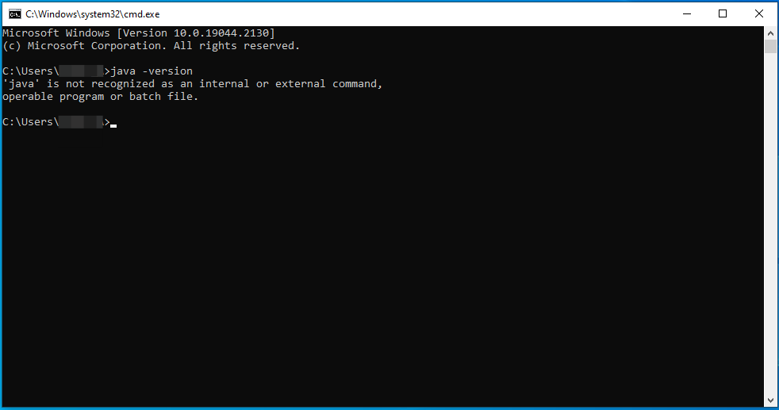
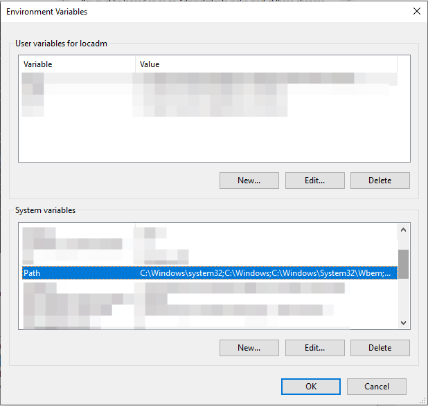
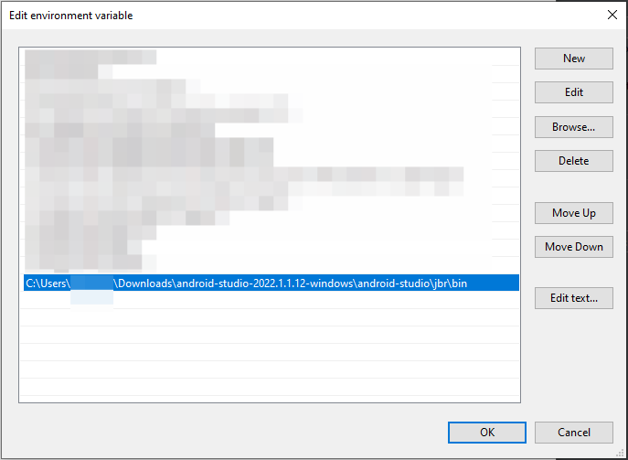

Работа с adb
В прошлом уроке мы написали первый тест на Kaspresso, и на данном этапе наш тест умеет взаимодействовать с элементами интерфейса приложения, может на них каким-то образом воздействовать (прим. клик по кнопке) и проверять их состояние (видимость, кликабельность и т.д.).
Но часто бывают случаи, когда для тестирования недостаточно использовать возможности только нашего приложения. Например, во время теста мы можем захотеть проверить работу приложения:
- При отсутствии интернета
- Во время входящего звонка
- При низком уровне заряда телефона
- При смене ориентации устройства
- И т.д.
Во всех перечисленных сценариях тест должен управлять устройством и выполнять команды, которые находятся вне зоны ответственности приложения, которое мы тестируем. В этих случаях мы можем использовать возможности Android Debug Bridge (ADB).
ADB - это инструмент командной строки, который позволяет взаимодействовать с девайсом посредством различных команд. С их помощью вы можете выполнять такие действия как установка и удаление программ, получение списка установленных приложений, запуск опредленной Activity, отключение интернет-соединения и многое другое.
Все adb команды мы можем выполнять сами через командную строку, при этом библиотека Kaspresso поддерживает работу с adb и может выполнять их в автоматическом режиме. Для того, чтобы тесты, которые работают с adb, могли выполняться, необходимо запустить adb-server.
Проверка java и adb
Процесс запуска adb-server очень простой, если на вашем компьютере корректно прописаны пути к java и adb. Но если пути не прописаны, то придется их прописывать. Поэтому первое, что мы сделаем - проверим, требуется ли какая-то дополнительная работа или у вас и так все готово для запуска adb-server.
Откройте командную строку.
На Windows - комбинация клавиш Win + R, в открывшемся окне вводим cmd и нажимаем Enter
Сначала проверяем, что путь к java прописан корректно. Для этого пишем java -version.
Если все хорошо, то вы увидите вашу версию Java
Если же пути прописаны некорректно, то вы увидите что-то похожее на это

Теперь делаем такую же проверку для adb. Печатаем в консоли adb version
Если все хорошо, то вы увидите вашу версию ADB
В противном случае вы увидите примерно вот такую ошибку:

Если по обоим пунктам у вас все работает, то следующий шаг можете пропустить.
Настройка java и adb
Решение возникших проблем может отличаться в зависимости от вашей операционной системы и некоторых других факторов, поэтому мы здесь приведем самый популярный вариант решения для OS Windows. Если у вас другая ОС либо по какой-то причине данное решение вам не поможет, то поищите информацию в интернете, как сделать приведенные ниже действия в вашей ситуации. Не решив этих проблем, запустить adb-server не получится и тесты работать не будут.
Если вы дошли до этого урока, значит успешно запустили приложение из Android Studio на эмуляторе, а это значит, что java и adb на вашем компьютере установлены. Просто система не знает, где искать эти программы. Что нужно сделать - найти расположение этих программ и прописать в системе пути к ним.
Ищем путь к java, обычно она находится в папке jre\bin (в некоторых версиях она будет находится в jbr\bin). Часто ее можно найти по пути C:\Program Files\Java\jre1.8.0\bin.
Если нашли - копируйте этот путь, если нет - открывайте Android Studio. Переходите в File -> Settings -> Build, Execution, Deployment -> Build Tools -> Gradle

Тут будет прописан путь к нужной папке - скопируйте его.
Теперь его нужно прописать в переменных среды, для этого кликаем win + x -> выбираем System -> Advanced System Settings -> Advanced -> Environment Variables

В разделе System Variables выбираем Path и нажимаем Edit -> New -> Вставляем скопированный путь к папке с java -> Нажимаем OK

Перезапускаем компьютер, чтобы изменения вступили в силу и снова проверяем команду java -version
Нам осталось проделать все то же самое для adb. Ищем путь к папке platform-tools, в которой лежит adb.
Открываем Android Studio -> Tools -> SDK Manager. В поле Android SDK Location указан путь к папке Sdk, в которой находится platform-tools.
Копируем этот путь и добавляем в System Variables, как мы это делали ранее с java

Перезапускаем компьютер и проверям команду adb version
Теперь можем приступить к запуску adb-server. Если у вас все еще команды java и adb не работают, то погуглите, вариантов решения проблемы достаточно много. Все, что нужно сделать - найти путь к java и adb и прописать их в переменные среды.
Пробуем различные команды
Перед запуском тестов, давайте посмотрим, что можно сделать с помощью adb, рассмотрим несколько команд.
Во-первых, можем посмотреть, какие устройства сейчас подключены к adb. Для этого вводим команду adb devices

Сейчас мы не подключили никакое устройство к adb, поэтому список пустой, давайте запустим приложение на эмуляторе и выполним команду еще раз

Теперь в списке устройств отображается наш эмулятор.
С помощью adb-команд мы можем:
- Перезагрузить устройство
- Установить какое-то приложение
- Удалить приложение
- Загрузить файлы с телефона/на телефон
- И многое другое
Для практики давайте удалим приложение tutorial, которое мы только что запустили. Это делается при помощи команды adb uninstall package_name

Наиболее интересные задачи можно выполнять, если запустить команду adb shell. Она вызывает консоль Android (shell) для выполнения Linux-команд на устройстве.

Приведем несколько примеров таких команд.
Получение списка всех установленных приложений pm list packages.

Обратите внимане, что мы сначала запустили shell-консоль, а потом писали команды, уже находясь в ней. Поэтому на текущем этапе другие adb команды у вас работать не будут, пока вы не закроете shell-консоль через команду exit
При этом выполнять shell-команды можно и не открывая shell-консоль, для этого достаточно указывать полное наименование команды вместе с adb shell.
Например, давайте попробуем сделать скриншот и сохраним его на устройстве. В Android Studio можно открыть File Explorer, в котором отображаются все файлы и папки на девайсе.
Обычно скришоты сохраняют на sdcard, мы поступим также.
Для создания скриншота используется команда adb shell screencap /{pathToFile}/{name_of_image.png}. В нашем случае она будет выглядеть так: adb shell screencap /sdcard/my_screen.png
В Device File Explorer кликаем правой кнопкой мыши и нажимаем Synchronize, после чего в папке отобразится созданный нами скриншот
Работаем с adb в автотестах
Итак, мы немного попрактиковались в работе с adb, теперь нам нужно научиться работать с ним во время прогона теста. То есть тест, который мы создадим, должен уметь запускать adb-команды и проверять работу приложения после выполнения этих команд.
Для того чтобы тесты могли выполнять adb-команды, необходимо на нашем компьютере запустить adb-server. Сперва нужно скачать файл adbserver-desktop.jar на официальном гитхабе Kaspresso и выполнить следующую команду в терминале:
java -jar <path/to/file>/adbserver-desktop.jar
Для того, чтобы в консоли был корректно прописан путь к файлу, достаточно написать команду java -jar и просто перетянуть файл adbserver-desctop.jar в консоль, путь к файлу будет подставлен автоматически.

После ввода команды, нажмите Enter. Запустится AdbServer. При запуске теста девайс сообщит десктопу необходимые для выполнения теста adb команды.
Можем приступить к созданию автотеста.
В пакете com.kaspersky.kaspresso.tutorial создаем новый класс AdbTest и наследуемся от класса TestCase
package com.kaspersky.kaspresso.tutorial
import com.kaspersky.kaspresso.testcases.api.testcase.TestCase
class AdbTest : TestCase() {
}
В Kaspresso для работы с adb есть специальная абстракция AdbServer. Экземлпяр этого класса доступен в BaseTestContext и в BaseTestCase, наследником которого является наш класс AdbTest.
Ранее в консоли мы запускали команду adb devices, которая выводила список подключенных устройств. Давайте запустим эту же команду при помощи теста. Создаем метод test() и помечаем аннотацией @Test
package com.kaspersky.kaspresso.tutorial
import com.kaspersky.kaspresso.testcases.api.testcase.TestCase
import org.junit.Test
class AdbTest : TestCase() {
@Test
fun test() {
}
}
Чтобы выполнить adb-команду, мы можем напрямую обратиться к полю adbServer и вызвать один из методов -
performAdb, performCmd или performShell. По названиям методов должно быть понятно, что они делают
- performAdb выполняет команду adb
- performShell выполняет команду shell
- performCmd выполняет команду командной строки
Сейчас мы хотим вызвать adb команду devices вызываем соответствующий метод adbServer.performAdb("devices")
package com.kaspersky.kaspresso.tutorial
import com.kaspersky.kaspresso.testcases.api.testcase.TestCase
import org.junit.Test
class AdbTest : TestCase() {
@Test
fun test() {
adbServer.performAdb("devices")
}
}
Запускаем тест. Тест выполнен успешно. Обращаем ваше внимание, что для запуска этого теста у вас должны быть выполнены 2 условия:
- Запущен adb-server
- В приложении, которое вы тестируете, должно быть дано разрешение на использование интернета в манифесте
С первым пунктом мы разобрались раньше, сейчас давайте разберемся со вторым. Каждое приложение, которое взаимодействует с интернетом должно содержать разрешение на использование интернета. Оно прописывается в манифесте.

Если вы забудете указать это разрешение, тест работать не будет.
Сейчас тест запускает adb-команду, но не проверяет результат ее выполнения. Данная команда adb devices возвращает список строк с результатом (тип List<String>). На данный момент эта коллекция (список строк) содержит всего одну строку вот такого вида: `exitCode=0, message=List of devices attached
emulator-5555 device'. Давайте добавим проверку, что первый (и единственный) элемент этой коллекции содержит слово "emulator". Просто для того, чтобы попрактиковаться и убедиться, что мы корректно получаем результат выполнения команды adb.
package com.kaspersky.kaspresso.tutorial
import com.kaspersky.kaspresso.testcases.api.testcase.TestCase
import org.junit.Assert // Этот класс нужно импортировать
import org.junit.Test
class AdbTest : TestCase() {
@Test
fun test() {
val result = adbServer.performAdb("devices")
Assert.assertTrue( // Для проверки на то, что какое-то условие выполняется, можно воспользоваться методом Assert.assertTrue(), обратите внимание на импорты
Assert.assertTrue("emulator" in result.first()) //тут метод in проверяет, что в ответе (первый элемент из списка result) содержит слово "emulator"
)
}
}
Запускаем. Тест проходит успешно.
Теперь давайте попробуем выполнить несуществующию adb команду. Сначала посмотрим, как ее выполнение выглядит в терминале. Выполним adb undefined_command.
Info
Обращаем ваше внимание, что в терминале сейчас запущен adb-server, если мы хотим работать с командной строкой, пока запущен сервер, нужно запустить еще одно окно терминала и работать в нем

При выполнении этой команды внутри теста у нас будет брошено исключение AdbServerException и в поле message будет содержаться строка с текстом, который мы видели в консоли unknown command undefined_command. Чтобы тест не завершился с ошибкой, нам нужно обработать это исключение в блоке try catch и внутри блока catch можем добавить проверку, что сообщение об ошибке действительно содержит текст, указанный выше.
package com.kaspersky.kaspresso.tutorial
import com.kaspersky.kaspresso.internal.exceptions.AdbServerException
import com.kaspersky.kaspresso.testcases.api.testcase.TestCase
import org.junit.Assert
import org.junit.Test
class AdbTest : TestCase() {
@Test
fun test() {
val result = adbServer.performAdb("devices")
Assert.assertTrue("emulator" in result.first())
val command = "undefined_command"
try {
adbServer.performAdb(command)
} catch (e: AdbServerException) {
Assert.assertTrue("unknown command $command" in e.message)
}
}
}
Запускаем. Тест пройден успешно.
Мы научились запускать adb-команды внутри тестов. Давайте попрактикуемся в adb shell командах. Ранее мы получали список установленных приложений при помощи запроса вида adb shell pm list packages. Сейчас мы выполним его внутри теста и проверим, что наше приложение находится в списке установленных.
val packages = adbServer.performShell("pm list packages")
Assert.assertTrue("com.kaspersky.kaspresso.tutorial" in packages.first())
Обратите внимание, что если мы вызываем shell-команду при помощи
performShell, то писать adb shell не нужно.
Сейчас мы захардкодили имя пакета приложения, но есть способ гораздо удобнее, внутри тестов мы можем взаимодействовать с объектом Device, получать какую-то информацию об устройстве, текущем приложении и много другое. Из этого объекта мы можем получить название пакета текущего приложения. Для этого у объекта device нужно обратиться к свойству targetContext и у контекста получить packageName. Код теста в этом случае изменится на такой:
...
val packages = adbServer.performShell("pm list packages")
Assert.assertTrue(device.targetContext.packageName in packages.first())
...
Запускаем. Тест пройден успешно.
Последний тип команд, которые мы сегодня рассмотрим - команды cmd. Это те команды, которые мы пишем в консоли. Например, чтобы запустить adb-команду, мы в консоли пишем adb command_name. Теперь, если мы в тесте вместо performAdb вызовем performCmd, то нам нужно будет написать команду целиком:
val result = adbServer.performCmd("adb devices")
Assert.assertTrue("emulator" in result.first())
В этом случае результат работы программы не изменится.
Для практики можем выполнить какую-нибудь cmd-команду. Например, hostname выводит название хоста (вашего компьютера). Если мы запустим ее в консоли, то результат будет примерно следующим:

Давайте эту же команду выполним внутри теста и проверим, что результат не пустой.
val hostname = adbServer.performCmd("hostname")
Assert.assertTrue(hostname.isNotEmpty())
Запускаем. Тест пройден успешно.
Один из тестов, который мы добавили, проверяет, что в списке подключенных устройств есть эмулятор
val result = adbServer.performCmd("adb devices")
Assert.assertTrue("emulator" in result.first())
Мы его добавили только в целях ознакомления и чтобы попрактиковаться с различными командами. Реальные тесты могут запускаться как на эмуляторах, так и на реальных устройствах, и тесты не должны из-за этого падать, поэтому данный тест мы удалим. Итоговый код
AdbTest будет выглядеть следующим образом:
package com.kaspersky.kaspresso.tutorial
import com.kaspersky.kaspresso.internal.exceptions.AdbServerException
import com.kaspersky.kaspresso.testcases.api.testcase.TestCase
import org.junit.Assert
import org.junit.Test
class AdbTest : TestCase() {
@Test
fun test() {
val command = "undefined_command"
try {
adbServer.performAdb(command)
} catch (e: AdbServerException) {
Assert.assertTrue("unknown command $command" in e.message)
}
val packages = adbServer.performShell("pm list packages")
Assert.assertTrue(device.targetContext.packageName in packages.first())
val hostname = adbServer.performCmd("hostname")
Assert.assertTrue(hostname.isNotEmpty())
}
}
Итог
В сегодняшнем уроке мы узнали, что такое adb, настроили работу adb-server, научились выполнять различные типы команд (cmd, adb, shell) в консоли и в автотестах, а также узнали про объект Device, у которого мы можем получать различную информацию об устройстве и приложении, которое мы тестируем.